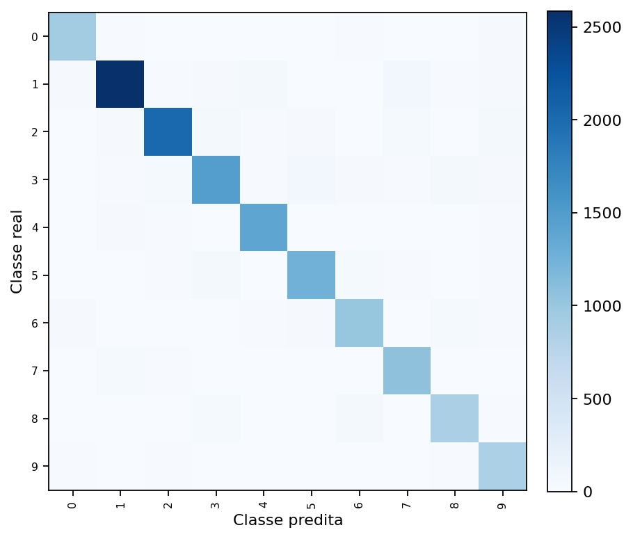
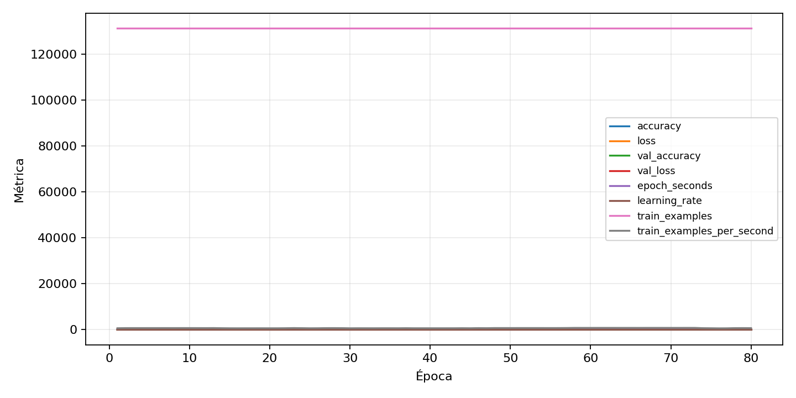

| n_samples | 14893 |
|---|---|
| loss | 0.31916213035583496 |
| accuracy | 0.9021016584972806 |
| balanced_accuracy | 0.9010852397159054 |
| macro_f1 | 0.8960506335600857 |


| Índice | Classe | Suporte | Precisão | Recall | F1 |
|---|---|---|---|---|---|
| 0 | 0 | 1004 | 0.9050880626223092 | 0.9213147410358565 | 0.9131293188548866 |
| 1 | 1 | 2844 | 0.9486426999266324 | 0.9092827004219409 | 0.9285457809694794 |
| 2 | 2 | 2210 | 0.9395348837209302 | 0.9140271493212669 | 0.9266055045871558 |
| 3 | 3 | 1707 | 0.8880822746521476 | 0.8599882835383714 | 0.8738095238095239 |
| 4 | 4 | 1497 | 0.9207397622192867 | 0.9311957247828991 | 0.925938226502823 |
| 5 | 5 | 1390 | 0.8919885550786838 | 0.8971223021582734 | 0.8945480631276901 |
| 6 | 6 | 1155 | 0.8600508905852418 | 0.8779220779220779 | 0.8688946015424164 |
| 7 | 7 | 1142 | 0.8699918233851186 | 0.9316987740805605 | 0.8997885835095139 |
| 8 | 8 | 1006 | 0.8595617529880478 | 0.8578528827037774 | 0.8587064676616916 |
| 9 | 9 | 938 | 0.833984375 | 0.9104477611940298 | 0.8705402650356779 |
{"adapter":"svhn","balance_mode":"undersample","class_names":["0","1","2","3","4","5","6","7","8","9"],"dataset":"svhn","dataset_options":{},"dataset_root":"/home/msduda/datasets-tcc/svhn","native_channels":3,"normalization":"zscore","num_classes":10,"protocol":{"checkpoint_monitor":"val_macro_f1","dtype_policy":"mixed_float16","early_stopping":{"patience":10,"restore_best_weights":true},"evaluation_augmentation":false,"input_channels":"native","optimizer":"Adam","pretrained_weights":false,"reduce_lr_on_plateau":{"factor":0.3,"min_lr":1e-07,"patience":4},"resize":"proportional_padding","test_time_augmentation":false,"training_from_scratch":true},"seed":42,"source_fingerprint":"7db49be5026c8b7da2f91e322de4245a9678833ee2ae7cd8c1a5feac9c0da7c3","source_manifest":{"class_names":["0","1","2","3","4","5","6","7","8","9"],"joined_samples":99289,"metadata":{"include_extra":false,"layout":"svhn-mat"},"name":"svhn","native_channels":3,"source_path":"/home/msduda/datasets-tcc/svhn","splits":{"test":26032,"train":73257},"target_size":64},"target_size":64,"test_fraction":0.15,"train_fraction":0.7,"training":{"augmentation":{"brightness_delta":0.03,"contrast_lower":0.92,"contrast_upper":1.08,"cutout_max_frac":0.08,"cutout_prob":0.25,"flip_lr":true,"noise_std":0.005,"translate_frac":0.05,"zoom_max":1.04,"zoom_min":0.96},"batch_size":512,"default_image_size":64,"dtype_policy":"mixed_float16","early_stopping_patience":10,"extra_fraction":2.0,"image_size_overrides":{"gtsrb":128},"keras_verbose":1,"learning_rate":0.0003,"max_epochs":100,"preprocess_cache_max_mib":2048,"reduce_lr_factor":0.3,"reduce_lr_min_lr":1e-07,"reduce_lr_patience":4,"shuffle_buffer_max_mib":1024},"validation_fraction":0.15}
{"epochs_completed":80,"epochs_recorded":80,"evaluation_seconds":23.348352982997312,"fit_seconds_current_attempt":16355.493343085,"max_epoch_seconds":234.85781889200007,"max_epochs":100,"mean_epoch_seconds":200.49048581963766,"mean_train_examples_per_second":660.2276296827846,"median_train_examples_per_second":661.6791695550407,"min_epoch_seconds":173.1667136169999,"selected_checkpoint":"/mnt/c/source/repos/teste-modelos-tcc/outputs/remaining-ram-capped/svhn/runs/svhn__zscore__undersample__seed-42/checkpoints/best.keras","total_seconds":16039.238865571013,"training_seconds":16039.238865571013,"wall_seconds_current_attempt":16437.660521356003}
{"elapsed_seconds":16437.771346419002,"event_counts":{"data_preparation_end":1,"data_preparation_start":1,"epoch_end":80,"evaluation_end":1,"evaluation_start":1,"fit_end":1,"fit_start":1,"periodic":3245,"run_completed":1,"train_start":1},"generated_at":"2026-07-31T17:24:15.656+00:00","gpu_backend":"pynvml","interval_seconds":5.0,"metrics":{"cpu_percent":{"count":3333,"max":17.1,"mean":12.424842484248424,"min":0.0,"p50":12.4,"p95":14.5},"disk_data_free_bytes":{"count":3333,"max":998223273984.0,"mean":998223272642.0162,"min":998223261696.0,"p50":998223273984.0,"p95":998223273984.0},"disk_data_percent":{"count":3333,"max":2.7,"mean":2.7,"min":2.7,"p50":2.7,"p95":2.7},"disk_data_total_bytes":{"count":3333,"max":1081101176832.0,"mean":1081101176832.0,"min":1081101176832.0,"p50":1081101176832.0,"p95":1081101176832.0},"disk_data_used_bytes":{"count":3333,"max":27885559808.0,"mean":27885548861.9838,"min":27885547520.0,"p50":27885547520.0,"p95":27885551616.0},"disk_output_free_bytes":{"count":3333,"max":5406797824.0,"mean":4230367389.9165916,"min":2821566464.0,"p50":3893153792.0,"p95":5217244774.4},"disk_output_percent":{"count":3333,"max":99.7,"mean":99.56363636363636,"min":99.5,"p50":99.6,"p95":99.6},"disk_output_total_bytes":{"count":3333,"max":999374712832.0,"mean":999374712832.0,"min":999374712832.0,"p50":999374712832.0,"p95":999374712832.0},"disk_output_used_bytes":{"count":3333,"max":996553146368.0,"mean":995144345442.0834,"min":993967915008.0,"p50":995481559040.0,"p95":995839864832.0},"elapsed_seconds":{"count":3333,"max":16437.662347,"mean":8224.82185629793,"min":0.033697,"p50":8228.348535,"p95":15629.1603526},"gpu_count":{"count":3333,"max":1.0,"mean":1.0,"min":1.0,"p50":1.0,"p95":1.0},"gpu_memory_percent":{"count":3333,"max":49.71566200256348,"mean":36.171946052027074,"min":31.659936904907227,"p50":37.094974517822266,"p95":44.20790672302246},"gpu_memory_total_bytes":{"count":3333,"max":8589934592.0,"mean":8589934592.0,"min":8589934592.0,"p50":8589934592.0,"p95":8589934592.0},"gpu_memory_used_bytes":{"count":3333,"max":4270542848.0,"mean":3107146506.522652,"min":2719567872.0,"p50":3186434048.0,"p95":3797430272.0},"gpu_temperature_c":{"count":3332,"max":57.0,"mean":46.58163265306123,"min":37.0,"p50":47.0,"p95":50.0},"gpu_utilization_percent":{"count":3333,"max":100.0,"mean":18.979897989798978,"min":2.0,"p50":10.0,"p95":53.0},"process_cpu_percent":{"count":3333,"max":221.8,"mean":163.87881788178817,"min":0.0,"p50":163.3,"p95":201.2},"process_read_bytes":{"count":3333,"max":312483840.0,"mean":312483366.8646865,"min":312455168.0,"p50":312483840.0,"p95":312483840.0},"process_rss_bytes":{"count":3333,"max":6673113088.0,"mean":6364907997.436543,"min":3112325120.0,"p50":6483542016.0,"p95":6594675507.2},"process_vms_bytes":{"count":3333,"max":51181514752.0,"mean":50874630324.651665,"min":48868061184.0,"p50":50963369984.0,"p95":51097587712.0},"process_write_bytes":{"count":3333,"max":1241088.0,"mean":1241088.0,"min":1241088.0,"p50":1241088.0,"p95":1241088.0},"ram_available_bytes":{"count":3333,"max":13544828928.0,"mean":10292372346.969097,"min":9984503808.0,"p50":10174988288.0,"p95":10820403200.0},"ram_percent":{"count":3333,"max":39.9,"mean":38.072487248724876,"min":18.5,"p50":38.8,"p95":39.4},"ram_total_bytes":{"count":3333,"max":16619085824.0,"mean":16619085824.0,"min":16619085824.0,"p50":16619085824.0,"p95":16619085824.0},"ram_used_bytes":{"count":3333,"max":6634582016.0,"mean":6326713477.030903,"min":3074256896.0,"p50":6444097536.0,"p95":6555620966.4}},"sample_count":3333,"schema_version":1}